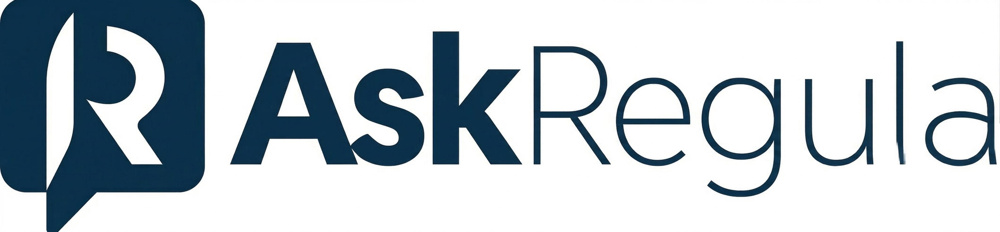

Mark answer as:
Summary
Based on the active regulatory scope and the documents available in this workspace, enhanced due diligence should be applied before onboarding the client. The combination of a corporate ownership structure, cross-border exposure, and beneficial ownership linked to a high-risk jurisdiction increases the AML risk profile and requires additional verification steps before the relationship can be approved.
Key points for this case
- The AML rulebook requires firms to apply enhanced due diligence where a customer or beneficial owner is connected to a high-risk jurisdiction [S1 | Core regulatory source].
- The client onboarding rules require identification and verification of beneficial owners, including escalation where ownership structures are complex or opaque [S2 | Core regulatory source].
- Workspace review notes indicate that the current file does not yet contain sufficient source-of-funds evidence for one of the controlling shareholders [S3 | Workspace document].
- Internal onboarding policy requires compliance sign-off before approval where enhanced due diligence conditions are triggered [S4 | Workspace document].
Operational guidance
- The client should not be approved for onboarding until enhanced due diligence has been completed and documented.
- Obtain additional source-of-funds and source-of-wealth evidence for the relevant beneficial owner.
- Escalate the file to Compliance for review and approval before account opening.
This answer is evidence-grounded but is not a legal opinion. Please confirm with internal
legal or compliance teams before approving onboarding or client-related decisions.